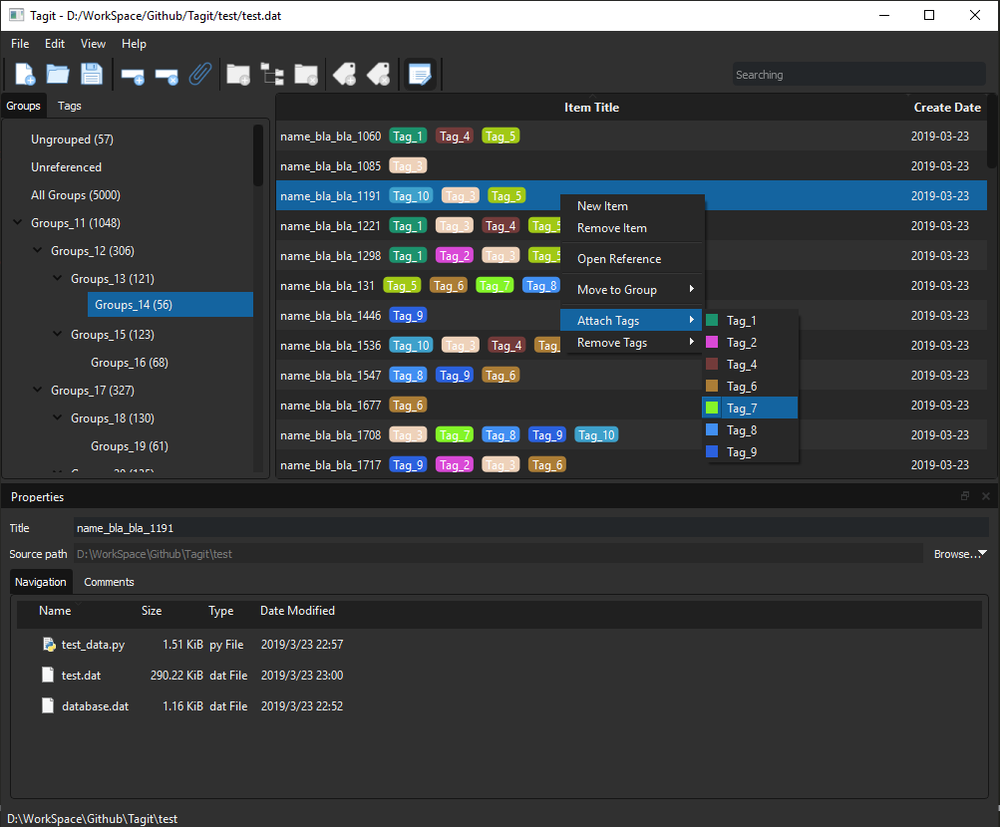

PyQt5应用实践：个人知识管理工具Tagit¶
发布于：2019-03-24 | 分类：python/vba/cpp
我们通常使用文件夹结构来分类管理文档/个人知识，但单一的目录结构难以有效组织具有交叉关系的内容。例如，以电影类型例如科幻片、战争片、剧情片来命名分类文件夹是个不错的选择，但同时我们很可能希望将同一导演/演员的作品组织在一起，于是不得不按照这个标准重新建立分类文件夹，并且需要重复复制文档。
针对此类问题，考虑 以虚拟的目录结构和标签来管理硬盘上实际存储的文档（文本/多媒体）。作者近期正在学习Qt相关知识，于是正好作为PyQt5的一个应用实践——这便是本文介绍的对象Tagit。区别于笔记类应用，Tagit并不创建和编辑文档实体，而是侧重以逻辑分类和标签来管理已经存在的文档；它更倾向于文献管理类软件，但不涉及文献格式方面的功能，而是着重于分类组织的能力。
本文简要介绍Tagit的主要功能及其实现所对应的Qt基础知识。

主要特征¶
分类、标签和条目是Tagit的主要对象。条目是Tagit中虚拟的文档记录，与真实的源文档一一对应；分类是虚拟的目录层次，可以根据需求进行自定义，类比为文件夹/目录；标签是对条目（映射真实文档）内容的标记，一个条目可以打上任意的标签。
-
分类管理（Group）
- 支持无限级分类
- 创建/修改/删除
- 分类下条目数量统计
-
标签管理（Tag）
- 自定义标签颜色
- 创建/修改/删除
- 标签下条目数量统计
-
条目管理（Item）
- 建立与源文档的映射
- 添加/修改分类（一个条目属于唯一分类）
- 添加/修改标签（一个条目可以添加多个标签）
- 拖拽条目添加分类/标签
- 按分类/标签筛选条目
- 关键字筛选条目
- 数据存储（目前采用
pickle直接存储数据）
-
用户界面
- 自定义UI样式（目前支持
default和dark风格）
- 自定义UI样式（目前支持
Qt布局、基本控件、信号/槽机制等基础知识暂且略过，下面将列出Qt模型/视图方面的相关知识——因为Tagit的核心对象分类/标签/条目采用的是QTreeView和QTableView来呈现的。
模型/视图框架（Model/View Framework）¶
Qt模型/视图模式框架 1 包含了模型（Model）、视图（View）、委托（Delegate）和代理（Proxy），有助于底层数据与渲染显示解耦。
- 模型持有数据（严格来说，通过模型中的自定义属性来存储数据）
- 视图从模型读取和渲染原始数据
- 委托定义模型在编辑状态的样式，并且可以自定义样式渲染视图
- 代理介于视图和源模型之间，方便对源模型数据进行排序、过滤等操作
采用此模式的典型控件有列表结构、表格结构和层次结构（树）等。在Tagit应用如下：
- 分类数据采用
QTreeview呈现，具体数据由子类化QAbstractItemModel的模型管理 - 标签和条目数据采用
QTableView显示，具体数据由子类化QAbstractTableModel的模型管理 - 条目标签的渲染委托
QStyledItemDelegate实现 - 条目数据的分类筛选通过子类化
QSortFilterProxyModel代理实现
模型/视图框架的各个组件通过预定义好的接口进行协作，例如视图通过data()方法向模型请求数据以便显示，所以用户在使用过程中只需要子类化相应的基类，然后根据业务需求实现相应的接口。以QAbstractItemModel为例 2，当继承该类来实现一个树形结构的模型时，至少需要实现5个接口：index()、 parent()、 rowCount()、 columnCount()及data()，它们保证了视图可以从模型中正确获取指定的数据。当然，这仅仅实现了只读属性，如果需要修改功能的话，则还需实现flags()和setData()接口，前者指定某一项是否允许修改，后者实现具体的修改方法。 如果子类化表格结构的模型QAbstractTableModel 3，同理需要实现上述接口，只不过QAbstractTableModel已针对表格结构进行了部分实现。例如，对于只读的表格，用户只需实现除了index()和parent()之外的3个接口即可。
下面从宏观角度归纳总结了子类化树、表格、列表结构模型时需要实现的接口 4：
数据处理接口¶
这是所有模型的基础，以便保证视图/委托能够从模型中正确获取数据。具体地又可以分为读取数据、修改内容、增删数据等几类。
-
读取数据
flags()表明数据项状态，例如是否有效、是否可以选中data()获取数据项存储的某一类型/角色的数据，例如表格单元格中的数据，可以获取其文本内容、字体属性等headerData()获取表头内容rowCount()获取行数columnCount()获取列数，对于列表模型QAbstractListModel而言，其列数始终为1，故无需实现
-
修改内容
flags()设置Qt::ItemIsEditable状态才允许修改数据项setData()设置数据包括内容、颜色、图标等，需要显式释放dataChanged信号，以通知视图进行显示刷新setHeaderData()修改表头内容，同理释放headerDataChanged信号通知视图更新
-
增删数据项
insertRows()和removeRows()添加和删除行insertColumns()和removeColumns()添加和删除列
数据索引接口¶
视图中的每一项，例如树结构的结点、表格结构的单元格、列表结构的行，都对应一个索引QModelIndex。表格和列表相对树结构来说，其层次结构都较为简单，因此本类的两个函数在树型结构中应用较多。
index()根据父节点及位置获取子项目的索引，便于遍历子项目parent()获取父节点索引
拖拽功能接口¶
mimeTypes()默认MIME类型为application/x-qabstractitemmodeldatalist，支持自定义以便在应用时进行过滤mimeData()设置存储在相应MIME类型中的数据，以便进行拖拽过程的数据传递supportedDropActions()指定支持的拖拽类型，是否允许拖动和释放dropMimeData()释放拖拽后的响应方法
注意，拖拽功能的实现需要数据处理相关接口的支持，例如修改数据内容、新增、删除行/列等。
拖拽（Drag and Drop）¶
Tagit的拖拽分类功能希望从QTableView拖拽条目到分类QTreeView上，从而完成添加分类操作。模型/视图框架提供了拖拽相关的接口，只需在模型类中重新实现相应的函数即可，而拖拽的显示效果则由视图自动维护。例如 5，
flags()方法中Qt.ItemIsDragEnabled和Qt.ItemIsDropEnabled指明是否允许拖拽和释放canDropMimeData()确定允许释放拖拽对象的条件dropMimeData()实现释放拖拽对象后执行的动作
当然，也可以在视图中重载拖拽事件函数来手动实现相应效果，例如 6：
dragEnterEvent和dragLeaveEvent决定进入和离开拖拽对象区域过程中是否接受拖拽对象dragMoveEvent决定在拖拽过程中鼠标位置是否是否接受释放对象（drop）dropEvent定义释放拖拽后需要进行的动作
这样功能上也能实现Tagit的拖拽分类，然而离预期还差一步——只能通过当前光标的位置观察条目将要被拖放到哪个分类上，而没有突出显示该分类。于是需要在处理拖拽事件的过程中通知刷新视图，并且在视图中借助paintEvent事件手工定义好目标对象的显示例如高亮样式。
绘图（Painter）¶
开篇Tagit预览界面条目表格中Item Title所示的标签是在委托QStyledItemDelegate中借助QPainter自定义绘制的。QPainter提供了底层的绘图能力，可以绘制图形或控件 7。
- 默认坐标原点在左上角，可以计算全局坐标后画图；也可以移动坐标系（
translate()/rotate()）后采用局部坐标画图 - 设置画笔（
setPen()）自定义绘制对象的边框样式 - 设置画刷（
setBrush()）自定义绘制对象的填充样式